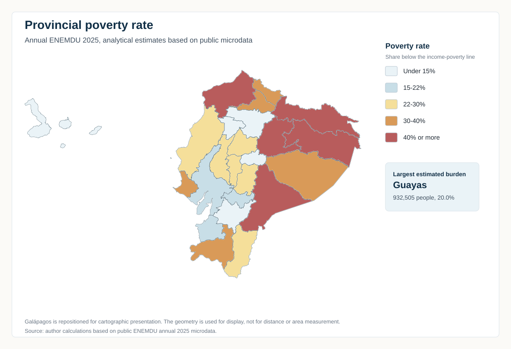

Territorial view of income poverty
Provincial patterns from annual ENEMDU 2025
Territorial view
Territorial view of income poverty
Provincial patterns from annual ENEMDU 2025.
Poverty is territorial in two different ways. Some provinces show higher poverty rates, while the largest population centers concentrate the greatest number of people living below the income-poverty line.
What this view covers
- Period
- Annual ENEMDU 2025
- Measure
- Income poverty
- Geography
- 24 provinces
- Reading
- Incidence and concentration
Executive signal
One map, two readings
The provincial map shows where poverty rates are highest. The executive table answers a different question: where the estimated number of people in poverty is largest.
That distinction matters. Esmeraldas has the highest poverty rate among the provinces highlighted in the incidence comparison, while Guayas has the largest estimated number of people in poverty: about 932,505 people, with a poverty rate of 20.0%.

Provincial poverty rate, annual ENEMDU 2025. Analytical estimates based on public microdata. Galápagos is repositioned for cartographic presentation.
Territorial incidence
Where rates are highest
These rates compare the intensity of income poverty across provinces. They should be read as analytical estimates, especially for smaller domains where sampling uncertainty can matter.
Population concentration
Where the burden is largest
The five provinces in the executive table account for about 2,257,759 estimated people in poverty. This ranking is based on the estimated number of people in poverty, not only on the poverty rate.
This helps separate territorial incidence from population concentration: a province can have a lower rate and still contain many more people in poverty because its population is much larger.
Executive table
Provinces with the largest estimated number of people in poverty
| Rank | Province | Estimated people in poverty | Poverty rate | Extreme poverty rate |
|---|---|---|---|---|
| 1 | Guayas | 932,505 | 20.0% | 3.4% |
| 2 | Manabí | 421,236 | 24.6% | 4.0% |
| 3 | Pichincha | 380,909 | 11.3% | 3.7% |
| 4 | Esmeraldas | 304,332 | 44.2% | 20.9% |
| 5 | Los Ríos | 218,776 | 22.0% | 3.8% |
The ranking is based on the estimated number of people in poverty. The poverty and extreme-poverty rates are included to keep incidence visible without turning the table into a rate ranking.
Source: author’s calculations based on public ENEMDU annual 2025 microdata. Provincial estimates are analytical and should be read together with the methodology page. They do not replace official statistical releases.
Incidence
The map compares provincial poverty rates.
Concentration
The table ranks estimated people in poverty.
Annual view
The reading uses annual ENEMDU 2025.
Prudent use
Provincial estimates are analytical and contextual.